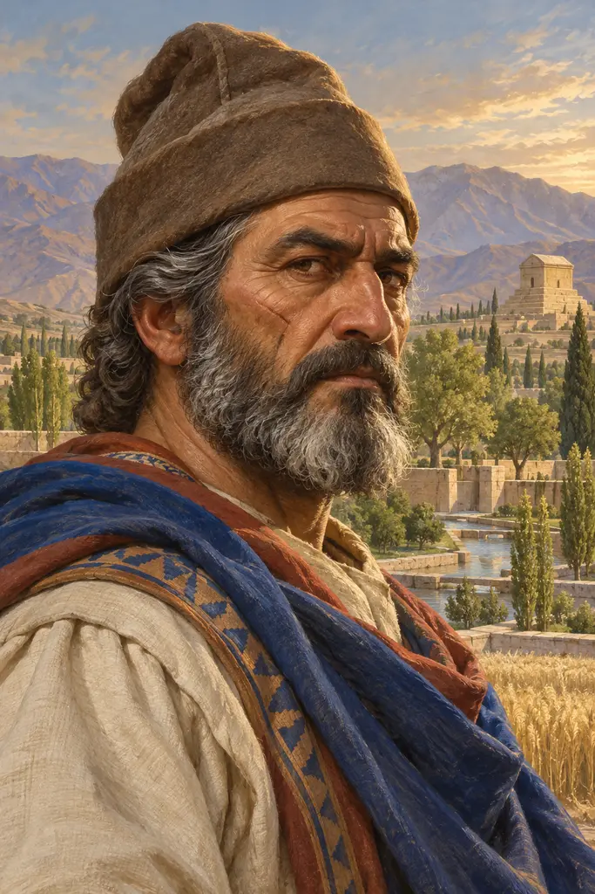
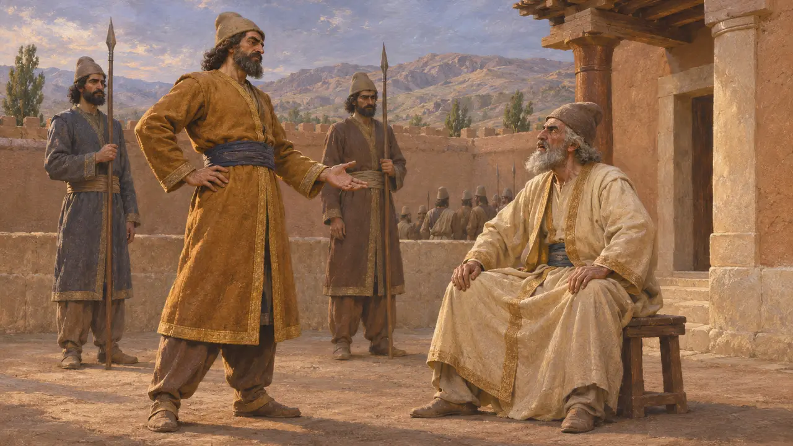
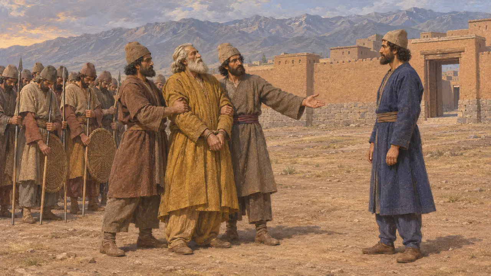
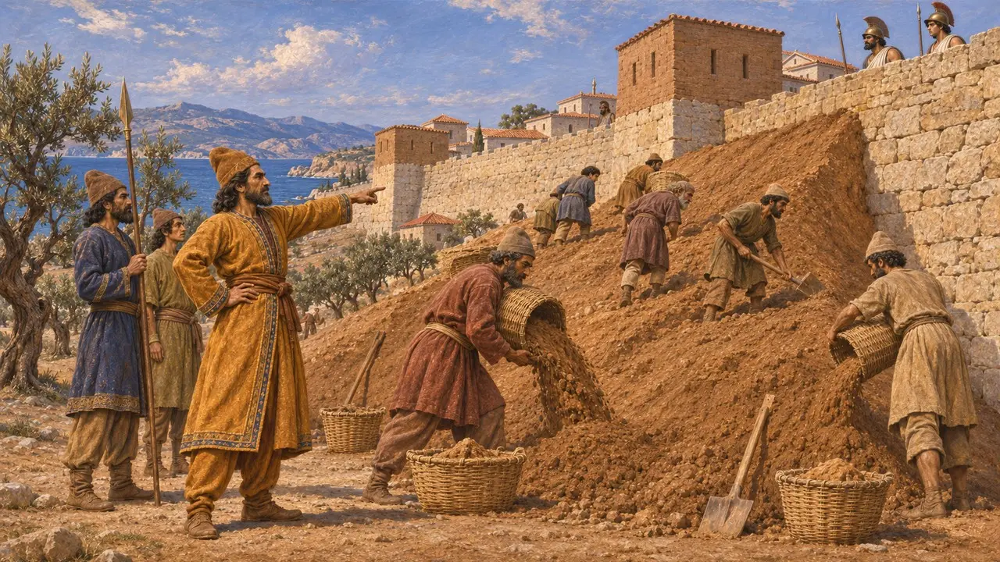
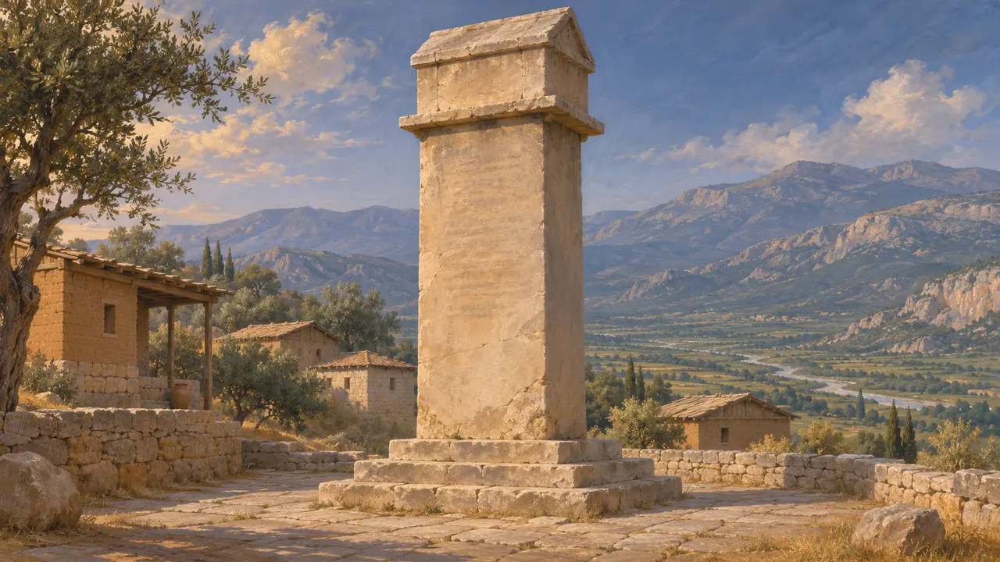

Arpago
Nobile medo al servizio di Ciro, conquistatore dell'Anatolia occidentale, circa 550-540 a.C.
Arpago era un nobile medo che, secondo Erodoto, aiutò Ciro a rovesciare il re medo Astiage e poi servì il nuovo re persiano come generale. Negli anni 540 a.C. sottomise al dominio persiano le città greche della Ionia, e poi la Caria e la Licia. Quasi tutto ciò che sappiamo di lui proviene da Erodoto, che ne racconta la storia come una vicenda di tradimento e vendetta.
Nel gioco: La nota della cronaca del gioco presenta Arpago come fa Erodoto: il Medo che tradì Astiage e conquistò le città ioniche con i terrapieni. Solo Erodoto lo nomina; nessuna fonte persiana o babilonese lo menziona.
Il bambino che non fu ucciso
Leggenda posterioreErodoto racconta che Astiage, messo in guardia da alcuni sogni, ordinò ad Arpago, uomo fidato della sua stessa casa, di uccidere il neonato Ciro. Arpago affidò il bambino a un mandriano, che invece lo allevò. Quando anni dopo il ragazzo fu ritrovato vivo, Astiage punì Arpago servendogli a banchetto la carne del suo stesso figlio. Il racconto ha la forma di una fiaba popolare e non trova riscontro in alcuna fonte persiana o babilonese.
Herodotus 1.107-119

Il tradimento di Astiage
Racconto anticoSecondo Erodoto, Arpago covò il suo rancore e spinse Ciro alla ribellione, inviandogli una lettera cucita dentro una lepre. Quando Astiage affidò ad Arpago il comando dell'esercito medo, molti soldati disertarono o passarono dalla parte di Ciro. Dopo la cattura di Astiage, si dice che Arpago lo abbia schernito. Il vecchio re gli rispose che Arpago aveva reso i Medi schiavi dei Persiani.
Herodotus 1.123-129

Cosa dice la cronaca babilonese
Nelle fontiLa Cronaca di Nabonedo, un documento babilonese, narra che nel sesto anno di Nabonedo, intorno al 550, Astiage marciò contro Ciro. Il suo esercito allora si ribellò, lo catturò e lo consegnò a Ciro. Ciro prese Ecbatana e ne portò il bottino ad Anshan. La cronaca concorda con Erodoto sul fatto che l'esercito medo abbandonò il suo re, ma non nomina alcun Arpago.
Nabonidus Chronicle (A. K. Grayson, ABC 7)

La conquista della Ionia, della Caria e della Licia
Racconto anticoDopo la caduta di Sardi morì il medo Mazare, e Arpago gli succedette nel comando sulla costa. Erodoto dice che prese le città ioniche una dopo l'altra innalzando terrapieni contro le loro mura. I Focei e i Tei abbandonarono le loro città per mare, anche se più della metà dei Focei fece presto ritorno in patria. Arpago sottomise poi la Caria e la Licia, dove gli Xanti bruciarono le proprie famiglie sulla loro cittadella e morirono combattendo.
Herodotus 1.162-176

Una dinastia licia della sua stirpe
ContesoIl Pilastro iscritto di Xanto, eretto intorno al 400, onora un dinasta licio detto figlio di Arppaxu, nome reso come Arpago nei suoi versi greci. Molti storici ritengono che la casata regnante di Xanto discendesse dal conquistatore e che il nome ricorresse nella famiglia. Altri dubitano di qualsiasi legame. Erodoto definisce persiano l'Arpago che catturò Istieo intorno al 494, e con ogni probabilità si trattava di un altro uomo.
Inscribed Pillar of Xanthus (TL 44); Herodotus 6.28; P. Briant, From Cyrus to Alexander, 2002
Fonti
- Herodotus 1.107-130
- Herodotus 1.162-176
- Nabonidus Chronicle (A. K. Grayson, Assyrian and Babylonian Chronicles, 1975, ABC 7)
- P. Briant, From Cyrus to Alexander, 2002
- Inscribed Pillar of Xanthus (TL 44)